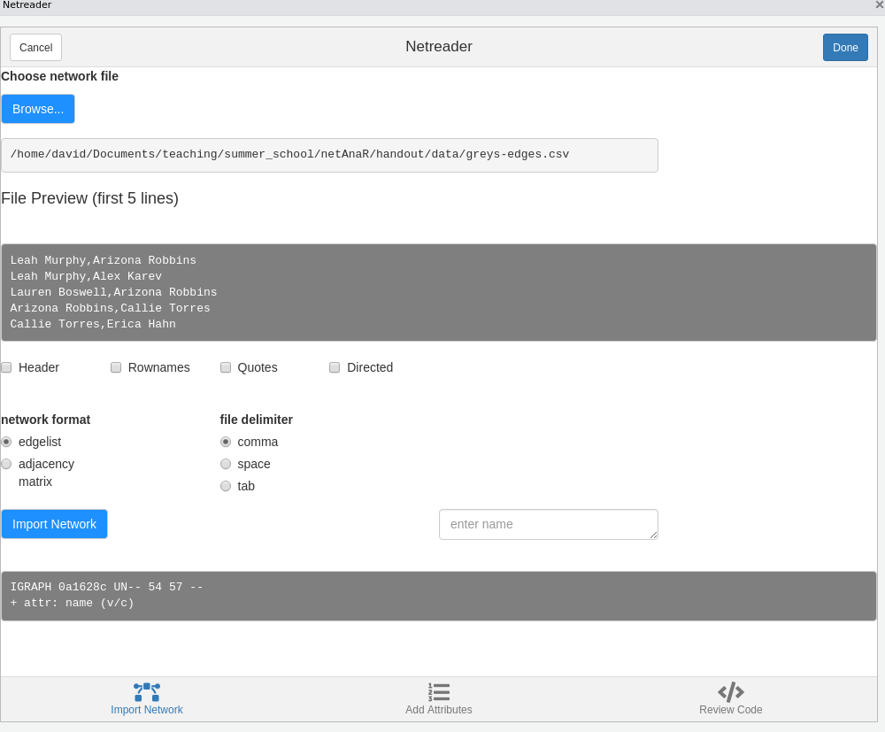
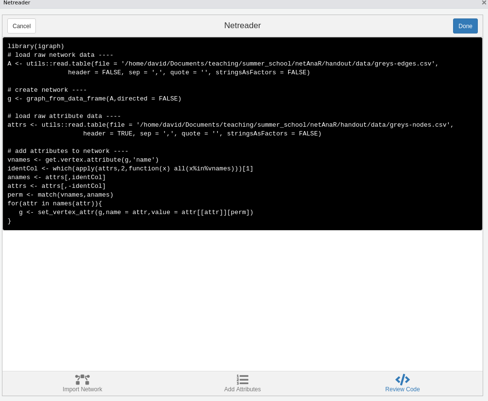

install.packages(c("igraph","netrankr"))
devtools::install_github("schochastics/networkdata")Basic Network Analysis in R
using igraph and related packages
2022-01-09
(last update 2022-08-10)
Shortcuts
Interested in specific topics? Here are some shortcuts
Basic network notations
Descriptives and more notations
Use Case: Triad Census
Concepts - Centrality (Use Case)
- Cliques and Clustering - Blockmodeling - Core-periphery
Special types of networks - two mode networks - signed networks - ego networks - multilevel networks - multigraphs
Introduction
The main focus of this tutorial is empirical analysis of networks and skips a lot of additional functionality of igraph For the most part of this tutorial, we assume that the network data is already present in R. Reading in data may not pose much of an issue if you are already familiar with R, but can be quite a challenge if you are new to R. The last section of this tutorial is devoted to this topic in great detail.
The tutorial does introduce key terms for network analysis, but much of the theory behind them is not explained in great detail. This tutorial is meant to be “hands-on”, giving practical help for empirical work. If you are interested in the technical/theoretical details behind certain methods, please consult relevant literature (a list is given at the end of the tutorial).
Required libraries
To run all the code in this tutorial, you need to install and load three packages.
igraph is used for the majority of analytic tasks and for its data structures. netrankr is a package for network centrality.
library(igraph)
library(netrankr)
library(networkdata)Make sure you have at least the version given below. Some of the examples may not be backward compatible.
packageVersion("igraph")[1] '1.3.1'packageVersion("netrankr")[1] '1.1.1'packageVersion("networkdata")[1] '0.1.11'Which package to choose?
Well, the last section spoiled already what we are going to use in this tutorial, but for the sake of completeness, I will discuss some other packages here and motivate why I would recommend igraph as the goto package for standard network analytic tasks.
Besides methods, igraph also provides data structures which facilitate to store and process network data. Two other packages that allow for this are graph and network. The former is, however, not available on CRAN anymore, only via Bioconductor. The latter provides the foundation for much of the statistical modelling aspects for networks such as Exponential Random Graph Models (ERGMs) and Stochastic Actor Oriented Models (SAOMs).
The figure below shows how many packages on CRAN rely on those three packages (i.e. they are mentioned in Depends, Imports, or Suggests).
The figure was produced with the help of the cranet package (link). igraph seems to be clearly favored by the R community. So if you install a package for, say, signed network analysis, changes are high that it depends on the graph structures provided by igraph. Besides the data structures, the package offers a large variety of network analytic methods which are all implemented in C. The methods are well optimized and also work quite well for large graphs.
The network package historically shares some commonalities with igraphs data structures. The package itself, though is really only providing the data structure and no analytic methods. The sna package (link) implements network analytic tools using the data structures provided by network. Overall, the syntax and provided methods are very much comparable between igraph and sna and they are almost interchangeable in this regard. The advantage of igraph is its speed. I have run several benchmark tasks and igraph usually comes out on top. That being said, there is no real case to be made against network/sna. If you are into statistical modelling of networks, then that should actually be the preferred choice since the ergm package is build on top of network. In this case you probably also want to look at the meta package statnet (link) which includes network, sna, and ergm (among other packages).
The package intergraph (link) can be used if you need to switch representations between igraph and network.
Basic network notations
Networks are commonly represented with an adjacency matrix or via an edgelist. If you are interested in a “tidy way” checkout my tidygraph tutorial. Below, we represent friendship relations between Bob, Ann, and Steve as a matrix and an edgelist.
# adjacency matrix
A <- matrix(c(0,1,1,1,0,1,1,1,0),nrow = 3,ncol = 3,byrow = TRUE)
rownames(A) <- colnames(A) <- c("Bob","Ann","Steve")
A Bob Ann Steve
Bob 0 1 1
Ann 1 0 1
Steve 1 1 0#edge list
el <- matrix(c("Bob","Ann","Bob","Steve","Ann","Steve"),
nrow = 3,ncol = 2, byrow = TRUE)
el [,1] [,2]
[1,] "Bob" "Ann"
[2,] "Bob" "Steve"
[3,] "Ann" "Steve"The adjacency matrix \(A\) is symmetric, meaning that the relations are undirected, i.e. Bob is friends with Ann and Ann is friends with Bob. In general, \(A[i,j]=1\), if there is a relation between \(i\) and \(j\). If \(A[i,j]=1\) does not imply \(A[j,i]=1\) then \(A\) defines a directed network.
Once we have defined an edgelist or an adjacency matrix, we can turn them into igraph objects as follows.
g1 <- graph_from_adjacency_matrix(A, mode = "undirected", diag = FALSE)
g2 <- graph_from_edgelist(el,directed = FALSE)
#g1 and g2 are the same graph so only printing g1
g1IGRAPH 792b086 UN-- 3 3 --
+ attr: name (v/c)
+ edges from 792b086 (vertex names):
[1] Bob--Ann Bob--Steve Ann--SteveThe printed summary shows some general descriptives of the graph. The string “UN–” in the first line indicates that the network is Undirected (D for directed graphs) and has a Name attribute (we named the nodes Bob, Ann, and Steve). The third and forth character are W, if there is a edge weight attribute, and B if the network is bipartite (there exists a node attribute “type”). The following number indicate the number of nodes and edges. The second line lists all graph, node and edge variables. Here, we only have a node attribute “name”.
The conversion from edgelist/adjacency matrix into an igraph object is quite straightforward. The only difficulty is setting the parameters correctly (Is the network directed or not?), especially for edgelists where it may not immediately be obvious if the network is directed or not.
In the following, we use a larger network to introduce some terminology.
data("greys")The “greys” network is part of the networkdata package and consists of most characters from the show “Grey’s Anatomy” and who hooked up with whom.
greysIGRAPH f7716f1 UN-- 54 57 --
+ attr: name (v/c), sex (v/c), race (v/c), birthyear (v/n), position
| (v/c), season (v/n), sign (v/c)
+ edges from f7716f1 (vertex names):
[1] Arizona Robbins--Leah Murphy Alex Karev --Leah Murphy
[3] Arizona Robbins--Lauren Boswell Arizona Robbins--Callie Torres
[5] Erica Hahn --Callie Torres Alex Karev --Callie Torres
[7] Mark Sloan --Callie Torres George O'Malley--Callie Torres
[9] Izzie Stevens --George O'Malley Meredith Grey --George O'Malley
[11] Denny Duqutte --Izzie Stevens Izzie Stevens --Alex Karev
[13] Derek Sheperd --Meredith Grey Preston Burke --Cristina Yang
+ ... omitted several edgesDescriptives and more notations
The density of a network is defined as the fraction of the potential edges in a network that are actually present.
c(graph.density(graph.empty(10)),
graph.density(greys),
graph.density(graph.full(10)))[1] 0.0000000 0.0398323 1.0000000The density of an empty network is \(0\) and for the full network it is \(1\). The density of empirical network lies somewhere in between but as the number of nodes increases, we’d expect the density to decrease and the network becomes quite sparse.
A shortest path is a path that connects two nodes in a network with a minimal number of edges. The length of a shortest path is called the distance between two nodes.
shortest_paths(greys,from = "Alex Karev",to = "Owen Hunt",output = "vpath")$vpath
$vpath[[1]]
+ 5/54 vertices, named, from f7716f1:
[1] Alex Karev Addison Montgomery Mark Sloan Teddy Altman
[5] Owen Hunt
$epath
NULL
$predecessors
NULL
$inbound_edges
NULLdistances(greys)[1:10,1:10] Addison Montgomery Adele Webber Teddy Altman Amelia Shepherd
Addison Montgomery 0 Inf 2 2
Adele Webber Inf 0 Inf Inf
Teddy Altman 2 Inf 0 2
Amelia Shepherd 2 Inf 2 0
Arizona Robbins 3 Inf 3 3
Rebecca Pope 2 Inf 4 4
Jackson Avery 3 Inf 3 3
Miranda Bailey Inf Inf Inf Inf
Ben Warren Inf Inf Inf Inf
Henry Burton 3 Inf 1 3
Arizona Robbins Rebecca Pope Jackson Avery Miranda Bailey
Addison Montgomery 3 2 3 Inf
Adele Webber Inf Inf Inf Inf
Teddy Altman 3 4 3 Inf
Amelia Shepherd 3 4 3 Inf
Arizona Robbins 0 3 4 Inf
Rebecca Pope 3 0 3 Inf
Jackson Avery 4 3 0 Inf
Miranda Bailey Inf Inf Inf 0
Ben Warren Inf Inf Inf 1
Henry Burton 4 5 4 Inf
Ben Warren Henry Burton
Addison Montgomery Inf 3
Adele Webber Inf Inf
Teddy Altman Inf 1
Amelia Shepherd Inf 3
Arizona Robbins Inf 4
Rebecca Pope Inf 5
Jackson Avery Inf 4
Miranda Bailey 1 Inf
Ben Warren 0 Inf
Henry Burton Inf 0The Grey’s Anatomy network is disconnected and consists of \(4\) connected components. There are no shortest paths between components, which means that the distance is not measurable and set to infinity.
The length of the longest shortest path is called the diameter of the network.
diameter(greys)[1] 8Transitivity measures the probability that the neighbors of a node are also connected. This is also called the clustering coefficient.
transitivity(greys, type = "global")[1] 0transitivity(greys, type = "local", isolates = "zero") [1] 0 0 0 0 0 0 0 0 0 0 0 0 0 0 0 0 0 0 0 0 0 0 0 0 0 0 0 0 0 0 0 0 0 0 0 0 0 0
[39] 0 0 0 0 0 0 0 0 0 0 0 0 0 0 0 0The global transitivity of an undirected network is the ratio of the triangles and the connected triples in the network. Local transitivity of a node is the ratio of the triangles connected to the node and the triples centered on the node itself. In social networks, we generally assume that the transitivity is quite high (“the friend of my friend is also my friend”). In our example, we have zero for all values. This is due to the fact that a triangle would require a same sex hook-up which did not occur (Disclaimer: I never watched the show and gathered the hook ups from various internet resources. So this may well be wrong.).
For directed networks, a measure of importance is reciprocity, which is defined as the proportion of mutual edges between nodes. To illustrate the measure, we use a network of grooming relations among a group of rhesus monkeys.
data("rhesus")
reciprocity(rhesus)[1] 0.756757About 76% of edges are reciprocated in the network. The figure below highlights the reciprocated edges.
Use case: triad census
Expand
In this short use case example, we will discuss the triad census of a directed network. In a directed network, there are 16 possible configurations of edges that can occur between three nodes.

The triad census of a network gives the number of occurrences of each of these triad. Triads are labelled xyzL where x is the number of reciprocated ties, y is the number of unreciprocated ties and z is the number of null ties. The L term is a letter (U,C,D or T) which allows to differentiate between triads where these numbers are the same.
One of the many applications of the triad census is to compare a set of networks. In this example, we are tackling the question of “how transitive is football?” and asses structural differences among a set of football leagues.
data("football_triad")football_triad is a list which contains networks of 112 football leagues as igraph objects. A directed link between team A and B indicates that A won a match against B. Note that there can also be an edge from B to A, since most leagues play a double round robin. For the sake of simplicity, all draws were deleted so that there could also be null ties between two teams if both games ended in a draw.
Below, we calculate the triad census for all network at once using lapply(). The function returns the triad census for each network as a list, which we turn into a matrix in the second step. Afterwards, we manually add the row and column names of the matrix.
footy_census <- lapply(football_triad,triad_census)
footy_census <- matrix(unlist(footy_census),ncol=16,byrow = T)
rownames(footy_census) <- sapply(football_triad,function(x) x$name)
colnames(footy_census) <- c("003","012","102","021D","021U","021C","111D","111U",
"030T","030C","201","120D","120U","120C","210","300")
#normalize to make proportions comparable across leagues
footy_census_norm <- footy_census/rowSums(footy_census)
#check the Top 5 leagues
idx <- which(rownames(footy_census)%in%c("england","spain","germany",
"italy","france"))
footy_census[idx,] 003 012 102 021D 021U 021C 111D 111U 030T 030C 201 120D 120U 120C 210
england 2 10 0 58 31 40 34 44 338 29 19 118 129 143 131
france 1 23 5 30 33 44 48 40 332 41 16 132 108 160 114
germany 0 21 6 27 19 49 38 46 165 16 23 77 79 117 120
italy 1 4 2 35 43 30 30 22 419 38 5 164 116 118 99
spain 0 8 4 27 42 45 32 35 364 43 11 126 105 148 130
300
england 14
france 13
germany 13
italy 14
spain 20Notice how the transitive triad (030T) has the largest count in the top leagues, hinting toward the childhood wisdom: “If A wins against B and B wins against C, then A must win against C”.
In empirical studies, we are not necessarily only interested in transitive triads, but rather how the triad census profiles compare across networks. We follow Kathrine Faust’s suggestion and do a singular value decomposition (SVD) on the normalized triad census matrix.
footy_svd <- svd(footy_census_norm)SVDs are used to reduce the dimensionality of the data, but retaining most of the information. In our case, the data is 16 dimensional, which is impossible to visualize to compare the networks. With an SVD, we can reduce it to two dimensions and get a better visual overview.
How to interpret the dimensions? To investigate this question, we take a closer look at the first two dimensions and compare it to some network descriptives. For the sake of brevity, we here only look at the density and proportion of 030T triads. In general, any node/dyad/triad level statistic could be used.
Density doesn’t really seem to be related to the first dimension in this case (in many cases it is!). Might be worthwhile to explore this further
For the second dimension, we get a clearer association. It seems that the fraction of transitive triads is a good indicator for structural differences among leagues.
More details can be found in the paper by Kathrine Faust.
Centrality
In a nutshell, a measure of centrality is an index that assigns a numeric values to the nodes of the network. The higher the value, the more central the node. “Being central” is a very ambiguous term and it is thus no surprise that there exists a large variety of indices that assess centrality with very different structural properties of the network.
Given the abundance of measures, we will also look at dedicated centrality packages that implement indices which are not available in igraph.
igraph contains the following 10 indices:
- degree (
degree()) - weighted degree (
graph.strength()) - betweenness (
betweenness()) - closeness (
closeness()) - eigenvector (
eigen_centrality()) - alpha centrality (
alpha_centrality()) - power centrality (
power_centrality()) - PageRank (
page_rank()) - eccentricity (
eccentricity()) - hubs and authorities (
authority_score()andhub_score()) - subgraph centrality (
subgraph_centrality())
To illustrate some of the indices, we use the “dbces11” graph which is part of the netrankr package.
data("dbces11")degree simply counts the number of neighbors a node has.
degree(dbces11)A B C D E F G H I J K
1 1 2 2 3 4 4 4 4 4 5 closeness computes the shortest path distances among nodes. The most central node has the minimum distance to all other nodes (Since high scores are associated with central nodes, the distances are inverted).
closeness(dbces11) A B C D E F G H
0.0370370 0.0294118 0.0400000 0.0400000 0.0500000 0.0588235 0.0526316 0.0555556
I J K
0.0555556 0.0526316 0.0555556 The animation below gives an intuition on the calculation for one node. 
betweeness is the number of shortest paths that pass through a node (divided by the total number of shortest paths)
betweenness(dbces11) A B C D E F G H
0.00000 0.00000 0.00000 9.00000 3.83333 9.83333 2.66667 16.33333
I J K
7.33333 1.33333 14.66667 To get an intuition what it means to have a high betweenness, check the network below.

Any shortest path from the right will pass through the red node and vice versa. The red note is thus a sort of “gatekeeper” for any information that is passed from left to right.
eigenvector centrality extends the idea of degree by assuming that a node is central if it is connected to other central nodes.
eigen_centrality(dbces11)$vector A B C D E F G H
0.2259630 0.0645825 0.3786244 0.2415182 0.5709057 0.9846544 1.0000000 0.8386195
I J K
0.9113529 0.9986474 0.8450304 subgraph centrality is a bit more abstract but what it does is summing up all closed walks weighting them by the inverse factorial of its length.
subgraph_centrality(dbces11) A B C D E F G H I J
1.82510 1.59540 3.14857 2.42309 4.38713 7.80726 7.93941 6.67278 7.03267 8.24212
K
7.38956 The remaining indices are mostly designed for directed networks, page rank being the prime example. Note, though that the mentioned indices can also be applied to directed networks.
If we highlight the most central node for the calculated indices, we get the following.
So each index picks a different node as most central. While this is just a toy example, it highlights how influential the choice of indices can be in empirical settings.
10 is already quite a lot of indices, but there exist far more in the literature. Some of those are implemented in other packages.
The sna package implements roughly the same indices as igraph but adds:
- flow betweenness (
flowbet()) - load centrality (
loadcent()) - Gil-Schmidt Power Index (
gilschmidt()) - information centrality (
infocent()) - stress centrality (
stresscent())
There are also some dedicated centrality packages, such as centiserve, CINNA, influenceR and keyplayer. The biggest in terms of implemented indices is currently centiserve with a total of 33 indices.
library(centiserve)
as.character(lsf.str("package:centiserve")) [1] "averagedis" "barycenter" "bottleneck"
[4] "centroid" "closeness.currentflow" "closeness.freeman"
[7] "closeness.latora" "closeness.residual" "closeness.vitality"
[10] "clusterrank" "communibet" "communitycent"
[13] "crossclique" "decay" "diffusion.degree"
[16] "dmnc" "entropy" "epc"
[19] "geokpath" "hubbell" "katzcent"
[22] "laplacian" "leaderrank" "leverage"
[25] "lincent" "lobby" "markovcent"
[28] "mnc" "pairwisedis" "radiality"
[31] "salsa" "semilocal" "topocoefficient" The package is maintained by the team behind centiserver, the “comprehensive centrality resource and server for centralities calculation”. The website collects indices found in the literature. Currently (February 2022), it lists 403 different indices. That’s…a lot.
The description of CINNA says “Functions for computing, comparing and demonstrating top informative centrality measures within a network.” Most of the indices in the package are imported from other package, such as centiserve. In addition, there are:
- Dangalchev closeness (
dangalchev_closeness_centrality()) - group centrality (
group_centrality()) - harmonic closeness (
harmonic_centrality()) - local bridging centrality (
local_bridging_centrality())
The function calculate_centralities() can be used to calculate all applicable indices to a network. The primary purpose of the package is to facilitate the choice of indices by visual and statistical tools. If you are interested in the details, see this tutorial and this vignette.
influenceR and keyplayer are comparably small packages which implement only a small number of indices.
The choice of indices can be overwhelming and little guidelines exist on when to choose what. The worst thing to do in any case is to apply a handful of indices and pick the result that suits your interpretation best. In best case, you have substantive arguments to apply an index and the result does match the hypothesis (or not).
Use case: Florentine Families
Expand
A classic example application of centrality indices is the “Florentine Families” dataset, which is included in the networkdata package.
data("flo_marriage")
Th network shows marriage ties among Renaissance Families in Florence. Marriages at that time were strategic to improve the standing of families in society. The size of the names is proportional to the wealth of the families. Although the Strozzi were the wealthiest family, it was ultimately the Medici who became the most powerful family. This is in part due to their central position within this marriage network.
The table bellow shows the ranking for the four most commonly used centrality indices (1=top rank).
| name | degree | betweenness | closeness | eigen |
|---|---|---|---|---|
| Acciaiuoli | 13.5 | 14 | 11.5 | 12 |
| Albizzi | 6.5 | 3 | 3.5 | 9 |
| Barbadori | 10.5 | 8 | 6.5 | 10 |
| Bischeri | 6.5 | 6 | 8.0 | 6 |
| Castellani | 6.5 | 10 | 9.5 | 8 |
| Ginori | 13.5 | 14 | 13.0 | 14 |
| Guadagni | 2.5 | 2 | 5.0 | 5 |
| Lamberteschi | 13.5 | 14 | 14.0 | 13 |
| Medici | 1.0 | 1 | 1.0 | 1 |
| Pazzi | 13.5 | 14 | 15.0 | 15 |
| Peruzzi | 6.5 | 11 | 11.5 | 7 |
| Pucci | 16.0 | 14 | 16.0 | 16 |
| Ridolfi | 6.5 | 5 | 2.0 | 3 |
| Salviati | 10.5 | 4 | 9.5 | 11 |
| Strozzi | 2.5 | 7 | 6.5 | 2 |
| Tornabuoni | 6.5 | 9 | 3.5 | 4 |
No matter what structural feature we consider to be important, the Medici always have the most advantageous position.
Additional Material
I have written a series of blog post about the concept of network centrality, which introduces some novel tools to assess centrality. These also discuss empirical applications of indices in greater detail. (1, 2, 3)
The blog posts rely on the netrankr package (link), which also comes with 9 vignettes that explain the functionality in great detail. Note that the package also implements around 30 indices, but the index based approach is not its main purpose.
Cliques and Clustering
A clique in a network is a set of nodes that form a complete subnetwork within a network (called a complete subgraph). A maximal clique is a clique that cannot be extended to a bigger clique by addding more nodes to it.
data("clique_graph")All maximal cliques can be calculated with max_cliques() (only feasible for fairly small networks). The min parameter can be used to set a minimum size. Here, we want to ignore all cliques of size \(2\).
# only return cliques with three or more nodes
cl <- max_cliques(clique_graph,min = 3)
cl[[1]]
+ 3/30 vertices, from 0193e05:
[1] 9 17 18
[[2]]
+ 3/30 vertices, from 0193e05:
[1] 7 4 5
[[3]]
+ 3/30 vertices, from 0193e05:
[1] 7 4 8
[[4]]
+ 3/30 vertices, from 0193e05:
[1] 10 2 11
[[5]]
+ 3/30 vertices, from 0193e05:
[1] 16 12 15
[[6]]
+ 3/30 vertices, from 0193e05:
[1] 6 1 5
[[7]]
+ 4/30 vertices, from 0193e05:
[1] 12 13 15 14
[[8]]
+ 3/30 vertices, from 0193e05:
[1] 12 2 1
[[9]]
+ 5/30 vertices, from 0193e05:
[1] 1 2 5 4 3The figure below shows the network and the found maximal cliques.
Related to cliques is the k-core decomposition of a network. A k-core is a subgraph in which every node has at least k neighbors within the subgraph. A k-core is thus a relaxed version of a clique.
The function coreness() can be used to calculate the k-core membership for each node.
kcore <- coreness(clique_graph)
kcore [1] 4 4 4 4 4 3 2 2 2 2 2 3 3 3 3 3 2 2 1 1 1 1 1 1 1 1 1 1 1 1Cliques are the prototypical and most strict definition of a cohesive subgroup of a graph. In empirical networks, however, we rarely encounter situations where we can partition the whole network into a set of cliques. A relaxed version of this problem is that of clustering, also referred to as comunity detection. A cluster is loosely defined as a group of nodes which are internally densely and externally sparsely connected. The network below shows an example for a network with a visible and intuitive cluster structure.
In contrast, the network below does not really seem to have any well defined cluster structure.
The following algorithms for graph clustering are implemented in igraph.
[1] "cluster_edge_betweenness" "cluster_fast_greedy"
[3] "cluster_fluid_communities" "cluster_infomap"
[5] "cluster_label_prop" "cluster_leading_eigen"
[7] "cluster_leiden" "cluster_louvain"
[9] "cluster_optimal" "cluster_spinglass"
[11] "cluster_walktrap" Most of these algorithms are based on “modularity maximization”. Modularity is defined as the fraction of edges that fall within given groups minus the expected fraction if edges were distributed at random.
The workflow of a cluster analysis is always the same, independent from the chosen method. We illustrate the workflow using the infamous karate club network.
data("karate")# compute clustering
clu <- cluster_louvain(karate)
# cluster membership vector
mem <- membership(clu)
mem [1] 1 1 1 1 2 2 2 1 3 1 2 1 1 1 3 3 2 1 3 1 3 1 3 4 4 4 3 4 4 3 3 4 3 3# clusters as list
com <- communities(clu)
com$`1`
[1] 1 2 3 4 8 10 12 13 14 18 20 22
$`2`
[1] 5 6 7 11 17
$`3`
[1] 9 15 16 19 21 23 27 30 31 33 34
$`4`
[1] 24 25 26 28 29 32To compare the quality of clusterings, we can compute the modularity score for each output.
imc <- cluster_infomap(karate)
lec <- cluster_leading_eigen(karate)
loc <- cluster_louvain(karate)
sgc <- cluster_spinglass(karate)
wtc <- cluster_walktrap(karate)
scores <- c(infomap = modularity(karate,membership(imc)),
eigen = modularity(karate,membership(lec)),
louvain = modularity(karate,membership(loc)),
spinglass = modularity(karate,membership(sgc)),
walk = modularity(karate,membership(wtc)))
scores infomap eigen louvain spinglass walk
0.402038 0.393409 0.419790 0.419790 0.353222 For the karate network, cluster_spinglass() produces the highest modularity score. The corresponding clustering is shown below.
Modularity maximization is still widely considered as the state-of-the-art clustering method for networks. There are, however, some technical shortcomings that one should be aware of. One of those is the so called “resolution limit”. When modularity is being maximized, it can happen that smaller clusters are merged together to form bigger clusters. The prime example is the graph that consists of cliques connected in a ring.
The figure below shows such a graph, consisting of 50 cliques of size 5.
Intuitively, any clustering method should return a cluster for each clique.
clu_louvain <- cluster_louvain(K50)
table(membership(clu_louvain))
1 2 3 4 5 6 7 8 9 10 11 12 13 14 15 16 17 18 19 20 21 22 23
15 10 10 10 10 10 15 10 10 10 10 10 15 10 10 10 10 10 10 15 10 10 10 A clustering algorithm that fixes this issue is the leiden algorithm.
clu_leiden <- cluster_leiden(K50,objective_function = "CPM",resolution_parameter = 0.5)
table(membership(clu_leiden))
1 2 3 4 5 6 7 8 9 10 11 12 13 14 15 16 17 18 19 20 21 22 23 24 25 26
5 5 5 5 5 5 5 5 5 5 5 5 5 5 5 5 5 5 5 5 5 5 5 5 5 5
27 28 29 30 31 32 33 34 35 36 37 38 39 40 41 42 43 44 45 46 47 48 49 50
5 5 5 5 5 5 5 5 5 5 5 5 5 5 5 5 5 5 5 5 5 5 5 5 The figure below shows the clusters computed with the louvain method in grey and the leiden method in red.
I’ll spare the technical details of the leiden method. If you are interested, check out the original paper.
Blockmodeling
Blockmodeling is similar to
(Stochastic) Blockmodels, for instance, can also be used to find community structures. Several packages exist for this, such as randnet or blockmodels.
Core-Periphery structures
I want to learn about …
… two mode networks
Expand
A two mode network is a network that consists of two disjoint sets of nodes (like people and events). Ties connect the two sets, e. g. participation of people in events. There exists a great variety of two modenetworks. The most often encountered ones are
- Affiliation networks (Membership in institutions )
- Voting/Sponsorship networks (politicians and bills)
- Citation network (authors and papers)
- Co-Authorship networks (authors and papers)
Below we will discuss some methods via the famous “southern women” dataset consisting of 18 women who attended a series of 14 events.
data("southern_women")The adjacency matrix of a two mode network is also referred to as an incidence matrix and can be obtained via as_incidence_matrix()
A <- as_incidence_matrix(southern_women)
A 6/27 3/2 4/12 9/26 2/25 5/19 3/15 9/16 4/8 6/10 2/23 4/7 11/21 8/3
EVELYN 1 1 1 1 1 1 0 1 1 0 0 0 0 0
LAURA 1 1 1 0 1 1 1 1 0 0 0 0 0 0
THERESA 0 1 1 1 1 1 1 1 1 0 0 0 0 0
BRENDA 1 0 1 1 1 1 1 1 0 0 0 0 0 0
CHARLOTTE 0 0 1 1 1 0 1 0 0 0 0 0 0 0
FRANCES 0 0 1 0 1 1 0 1 0 0 0 0 0 0
ELEANOR 0 0 0 0 1 1 1 1 0 0 0 0 0 0
PEARL 0 0 0 0 0 1 0 1 1 0 0 0 0 0
RUTH 0 0 0 0 1 0 1 1 1 0 0 0 0 0
VERNE 0 0 0 0 0 0 1 1 1 0 0 1 0 0
MYRNA 0 0 0 0 0 0 0 1 1 1 0 1 0 0
KATHERINE 0 0 0 0 0 0 0 1 1 1 0 1 1 1
SYLVIA 0 0 0 0 0 0 1 1 1 1 0 1 1 1
NORA 0 0 0 0 0 1 1 0 1 1 1 1 1 1
HELEN 0 0 0 0 0 0 1 1 0 1 1 1 0 0
DOROTHY 0 0 0 0 0 0 0 1 1 0 0 0 0 0
OLIVIA 0 0 0 0 0 0 0 0 1 0 1 0 0 0
FLORA 0 0 0 0 0 0 0 0 1 0 1 0 0 0The tnet (link) and bipartite (link) offer some methods to analyse two mode networks directly, by adapting tools for standard (one-mode) networks (like the ones described above).
Besides analyzing a two-mode network as-is, there is also the possibility to project it to one mode. Mathematically, this is done by calculating \(AA^T\) or \(A^TA\), depending which mode we project on. As an example, consider the southern women dataset again.
B <- A%*%t(A)
B EVELYN LAURA THERESA BRENDA CHARLOTTE FRANCES ELEANOR PEARL RUTH
EVELYN 8 6 7 6 3 4 3 3 3
LAURA 6 7 6 6 3 4 4 2 3
THERESA 7 6 8 6 4 4 4 3 4
BRENDA 6 6 6 7 4 4 4 2 3
CHARLOTTE 3 3 4 4 4 2 2 0 2
FRANCES 4 4 4 4 2 4 3 2 2
ELEANOR 3 4 4 4 2 3 4 2 3
PEARL 3 2 3 2 0 2 2 3 2
RUTH 3 3 4 3 2 2 3 2 4
VERNE 2 2 3 2 1 1 2 2 3
MYRNA 2 1 2 1 0 1 1 2 2
KATHERINE 2 1 2 1 0 1 1 2 2
SYLVIA 2 2 3 2 1 1 2 2 3
NORA 2 2 3 2 1 1 2 2 2
HELEN 1 2 2 2 1 1 2 1 2
DOROTHY 2 1 2 1 0 1 1 2 2
OLIVIA 1 0 1 0 0 0 0 1 1
FLORA 1 0 1 0 0 0 0 1 1
VERNE MYRNA KATHERINE SYLVIA NORA HELEN DOROTHY OLIVIA FLORA
EVELYN 2 2 2 2 2 1 2 1 1
LAURA 2 1 1 2 2 2 1 0 0
THERESA 3 2 2 3 3 2 2 1 1
BRENDA 2 1 1 2 2 2 1 0 0
CHARLOTTE 1 0 0 1 1 1 0 0 0
FRANCES 1 1 1 1 1 1 1 0 0
ELEANOR 2 1 1 2 2 2 1 0 0
PEARL 2 2 2 2 2 1 2 1 1
RUTH 3 2 2 3 2 2 2 1 1
VERNE 4 3 3 4 3 3 2 1 1
MYRNA 3 4 4 4 3 3 2 1 1
KATHERINE 3 4 6 6 5 3 2 1 1
SYLVIA 4 4 6 7 6 4 2 1 1
NORA 3 3 5 6 8 4 1 2 2
HELEN 3 3 3 4 4 5 1 1 1
DOROTHY 2 2 2 2 1 1 2 1 1
OLIVIA 1 1 1 1 2 1 1 2 2
FLORA 1 1 1 1 2 1 1 2 2This matrix can now be interpreted as a weighted network among the 18 women. Each entry corresponds to the number of times two women went to the same event.
As you can see, the network has become very dense. A very common step is now to binarize the network. In doing so, we basically turn the network into a simple undirected one-mode network. This makes all methods we described in the first few sections applicable to the network (at least in theory). The simplest way of binarizing a weighted projection is to define a global threshold and remove a tie if its weight is below the global threshold. This is simple but come with many undesirable structural problems. More sophisticated tools work with statistical models in the background which determine if an edge weight differs enough from the expected value. If so, the edge is kept in the binary “backbone” of the network.
All possible backbone extraction methods are implemented in the backbone package (link). An introduction to the package can be found on arxiv.
… signed networks
Expand
Traditional SNA usually deals with relations among entities (e.g. people) that are positive, including “friendship”, “advice seeking”, etc. Most network analytic tools are devised under this premise, be that centrality indices, clustering tools and so forth. But of course not all occurring relations are positive. People can be friends but also foes.
This gives rise to signed networks. These networks are usually composed of both, positive and negative, ties measured among a set of entities. Traditional network analytic tools are not applicable to such networks without adapting for the presents of negative ties. The signnet package (link) brings together methods that have been developed to analyse signed networks. This includes
- Structural balance (tutorial)
- Blockmodeling (tutorial)
- Centrality (tutorial)
- Signed two-mode networks (tutorial)
A dedicated tutorial for each methodology is given in the package vignettes, also linked above. Below, we just briefly discuss the structure of the package.
The foundation of signnet is provided by igraph. All functions in the package assume that an igraph object is a signed network if it has an edge attribute “sign” with values 1 (positive) or -1 (negative).
library(signnet)
g <- graph.full(5,directed = FALSE,loops = FALSE)
E(g)$sign <- 1
gIGRAPH d5a26e9 U--- 5 10 -- Full graph
+ attr: name (g/c), loops (g/l), sign (e/n)
+ edges from d5a26e9:
[1] 1--2 1--3 1--4 1--5 2--3 2--4 2--5 3--4 3--5 4--5All methods should throw an error if the sign attribute is missing or contains other values than -1 and 1.
Matrices associated with a signed network follow the igraph naming scheme. The signed adjacency matrix can be obtained with as_adj_signed().
data("tribes")
as_adj_signed(tribes)[1:5,1:5] Gavev Kotun Ove Alika Nagam
Gavev 0 1 -1 -1 -1
Kotun 1 0 -1 0 -1
Ove -1 -1 0 1 0
Alika -1 0 1 0 0
Nagam -1 -1 0 0 0The signed Laplacian matrix is obtained by laplacian_matrix_signed().
laplacian_matrix_signed(tribes)[1:5,1:5] Gavev Kotun Ove Alika Nagam
Gavev 8 -1 1 1 1
Kotun -1 8 1 0 1
Ove 1 1 6 -1 0
Alika 1 0 -1 3 0
Nagam 1 1 0 0 7A function not explicitly mentioned in the tutorials linked above is triad_census_signed() which calculates the signed triad census of a directed signed network. While the unsigned triad census has only 16 possible outcomes, there are 138 non-isomorphic signed triads, shown below.  The naming scheme is “xxx-yyyyyy” where “xxx” corresponds to the name of the respective unsigned triad and “yyyyyy” is a string of “0”, “N”, “P”, describing the type of ties present. So “300-NNNNNN” is a triad with all ties present and all ties are negative.
The naming scheme is “xxx-yyyyyy” where “xxx” corresponds to the name of the respective unsigned triad and “yyyyyy” is a string of “0”, “N”, “P”, describing the type of ties present. So “300-NNNNNN” is a triad with all ties present and all ties are negative.
The package includes two well known datasets to play with.
The “tribes” dataset is a signed social network of tribes of the Gahuku–Gama alliance structure of the Eastern Central Highlands of New Guinea. The network contains sixteen tribes connected by friendship (“rova”) and enmity (“hina”).
The “cowList” dataset contains a list of 52 signed networks of inter-state relations over time (1946-1999). Two countries are connected by a positive tie if they form an alliance or have a peace treaty. A negative tie exists between countries who are at war or in other kinds of conflicts. The dataset is derrived from the correlates of war.
… ego networks
Expand
If you want to analyze ego networks, then I can only recommend this book by Raffaele Vacca. Raffaele has given countless workshops on ego network analysis in R and his material should provide you with everything you need.
… multilevel networks
Expand
For analyzing multilevel networks, I recommend the multinet pakage (link). Check out this JSS Paper for a brief introduction into the package.
If you just want to visualize a multilevel network, then head over to my network visualization tutorial.
… multigraphs
Expand
Multigraphs are network representations in which multiple edges and edge loops (self edges) are permitted. In R, there are at least two relevant packages. The first is multigraph (link) which implements some visualization methods for multigraphs.
The second is multigraphr (link) which comes with a series of statistical methods to study local and global properties of such graphs and goodness of fit tests. The vignette of the package is a brilliant starting point for using the package.
For the technical details behind multigraphr, you can refer to:
Shafie, T. (2015). A multigraph approach to social network analysis. Journal of Social Structure, 16. (link)
Shafie, T. (2016). Analyzing local and global properties of multigraphs. The Journal of Mathematical Sociology, 40(4), 239-264. (link)
Shafie, T. and Schoch, D., (2021). Multiplexity analysis of networks using multigraph representations. Statistical Methods & Applications 30 (5), 1425-1444 (link)
Shafie, T. (Under review). Goodness of fit tests for random multigraph models.
… something else
Expand
Cant find what you are looking for? Ping me on twitter and I see what I can do.
Loading network data into R
igraph can deal with many different foreign network formats with the function read_graph. (The rgexf package can be used to import Gephi files.)
read_graph(file, format = c("edgelist", "pajek", "ncol", "lgl",
"graphml", "dimacs", "graphdb", "gml", "dl"), ...)(I personally have encountered some issue when importing graphml files that were produced in visone. Also dl files sometimes through an error.)
If your network data is in one of the above formats you will find it easy to import your network.
If your data is not in a network file format, you will need one of the following functions to turn raw network data into an igraph object: graph_from_edgelist(), graph_from_adjacency_matrix(), graph_from_adj_list(), or graph_from_data_frame().
Before using these functions, however, you still need to get the raw data into R. The concrete procedure depends on the file format. If your data is stored as an excel spreadsheet, you need additional packages. If you are familiar with the tidyverse, you can use the readxl package. Other options are, e.g. the xlsx package.
Most network data you’ll find is in a plain text format (csv or tsv), either as an edgelist or adjacency matrix. To read in such data, you can use base R’s read.table().
Make sure you check the following before trying to load a file: Does it contain a header (e.g. row/column names of an adjacency matrix)? How are values delimited (comma, whitespace or tab)? This is important to set the parameters header, sep to read the data properly.
If you are struggling with this step, you can use the Netreader Rstudio add in which comes with the snahelper package
 Using the Netreader should comes with a learning effect (hopefully). The last tab shows the R code to produce the network with the chosen data without using the Addin.

Since the addin is supposed to be very general, the code might look a bit awkward. The functions graph_from_edgelist() and graph_from_adjacency_matrix() come with a drawback. You can’t add node or edge attributes automatically.
In general, it is always a good idea to organize network data in two different data frames. One for the nodes (with attributes) and one for the edges (edgelist+attributes). This will save you a lot of pain when trying to convert the data into an igraph object. Especially if you want to go down the tidy way later.
What is missing?
I have tried to cover as many of the available packages and tools to analyze networks in R as possible and will include more details (and packages) over time. What I will probably never cover though are packages related to network dynamics, such as ergm or Rsiena. These are just not my 🍵. For ergm, you can refer to this statnet tutorial and for Rsiena you can check out the Rsiena webpage.